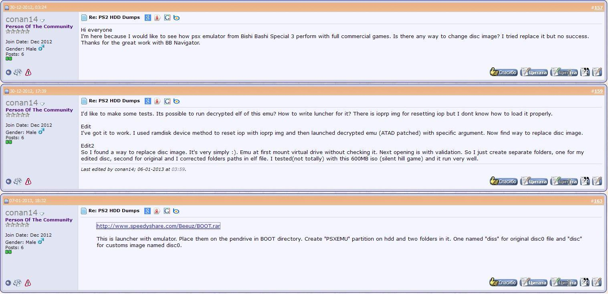
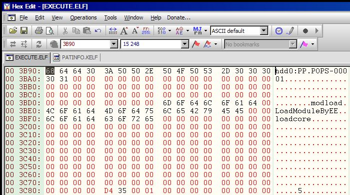
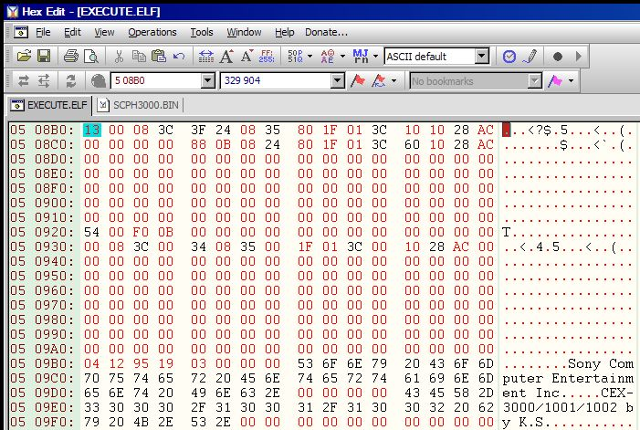
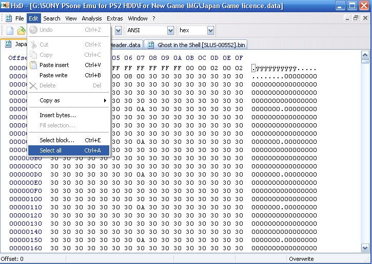
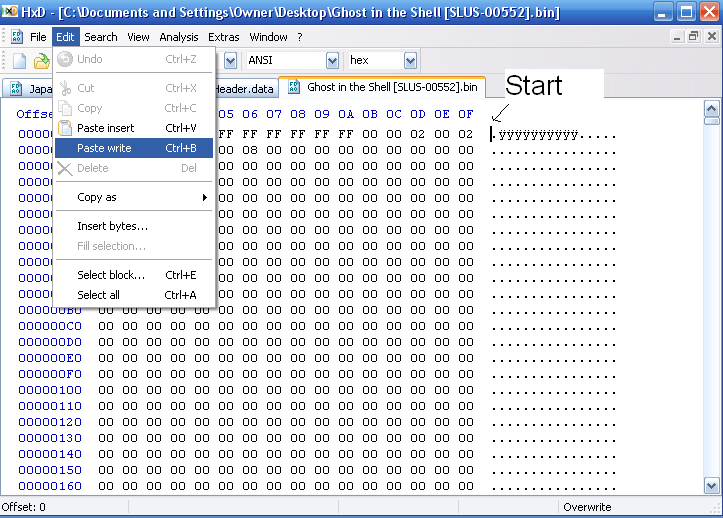
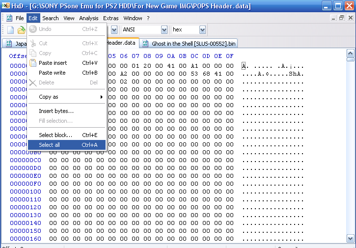
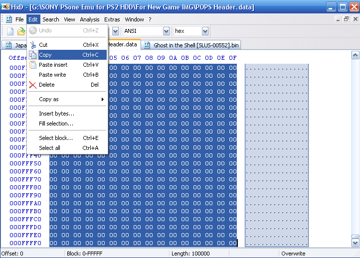
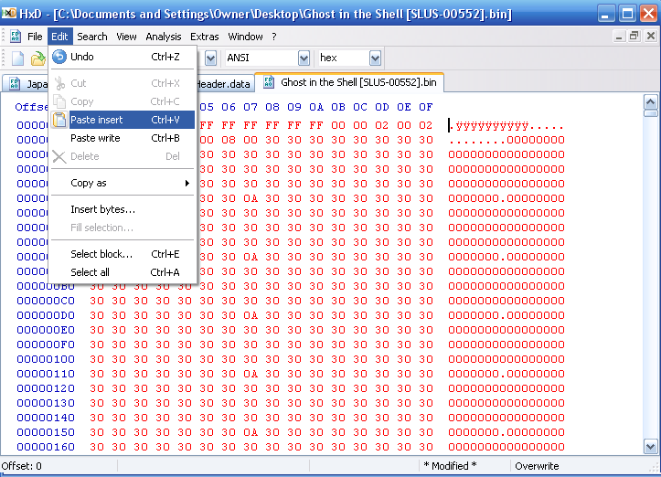

POC2 POPS 00001 Era
📎 Recovered from the ShaolinAssassin wiki · snapshot 20200812190314
POC2/POPS-00001 era
______________________________________________________________________________________________________________
- WARNING : This tutorial is OBSOLETE & for HISTORY PURPOSE ONLY.
______________________________________________________________________________________________________________
POPS-00001 is the second proof-of-concept (POC2) showing how it is possible to run non-Sony code using the PS1 emulator embedded into the PSBBN Demo Game ビシバシスペシャル3 (Bishi Bashi Stepchamp 3). It was realeased on a private Russian w@rez forum on 2013/01/22, just a few days after conan14 figured out how to to change the 2nd mounth path of the virtual drive, allowing the use of unauthorized dumps from commercial games.
POC2/POPS-00001 was a demonstration test, showing all the potential of the decrypted emulator from Sony. Unfortunately, on 2013/02/01, it was leaked with detailled instructions from his author’s PMs about how to use it on a well known w@rez website, bundled with an experimental 48 Bit HDDOSD and hexedited/“raped by the www”, causing the abortion of the project that were secretely elaborated after conan14’s found. On 2013/07/02, it was mis-announced on psx-scene : NEWS: Sony’s official PSX emulator for PS2 HDD leaked (thread is now deleted).
POPS-00001 isn’t the emulator itself, it’s a loader which has POPS inside. The “famous” 3,3MB EXECUTE.ELF was made of a homebrew launcher + the POPS ELF + the POPS IOPRP.
______________________________________________________________________________________________________________
______________________________________________________________________________________________________________
Original POPS-00001 archive content :
- PP.POPS-00001/disc/disc0
- PP.POPS-00001/EXECUTE.ELF
- PP.POPS-00001/EXECUTE.KELF
- PP.POPS-00001/MYDUMP.BIN
- PP.POPS-00001/ALIEN_LOOTER.ELF
- PP.POPS-00001/BLITTER_BOY_ALPHA.ELF
- PP.POPS-00001/HAUNTED_MAZE.ELF
- PP.POPS-00001/HIPOWER_BATTLERS.ELF
- PP.POPS-00001/PUSHY2B.ELF
- PP.POPS-00001/ROLLER.ELF
- PP.POPS-00001/YAROZE_RALLY.ELF
- PP.POPS-00001/ALIEN_LOOTER.KELF
- PP.POPS-00001/BLITTER_BOY_ALPHA.KELF
- PP.POPS-00001/HAUNTED_MAZE.KELF
- PP.POPS-00001/HIPOWER_BATTLERS.KELF
- PP.POPS-00001/PUSHY2B.KELF
- PP.POPS-00001/ROLLER.KELF
- PP.POPS-00001/YAROZE_RALLY.KELF
- PATINFO.KELF
The container went with contains some “cryptic” instructions about how to use it :
- Put the name of your partition at offset 3B95h
- Paste the deobfuscated POPS ELF (must have an ELF header) at offset 3C90h
- Paste the deobfuscated IOP replacement image at offset 308FA0h
Partition contents :
disc/disc0 (original disc image, in the folder "disc", dir name and file name are lowercase)
MYDUMP.BIN (your modified PS1 game disc image, in the root of the partition, file name is UPPERCASE)
POPS-00001 limitations :
-
Name of the partition was harcoded into EXECUTE.ELF at offset 3B95h ;
-
It was 24 Bit limited ;
-
It required a so-call “POPS header” taken from disc0 (which is Bishi Bashi demo) to be applied to the dump game ;
-
It also required to change the region sectors of the PAL & NTSC-U dump games, since it was regions-locked : NTSC-J limited (tho that were a workaround : using an EXECUTE.ELF with an injected region free BIOS inside – the so called “EXECUTE_POPS-PSP-660_BIOS_.ELF”) ;
-
Buggy IGR ;
-
HDD support only – of course.
POPS-00001/POC2 wasn’t end-user friendly and required a lot of hexediting -hey, it was just a POC after all…
______________________________________________________________________________________________________________
Hardware Requirements :
- PS2 HDD formatted
Software Requirements :
-
uLE_ev
-
HxD hexeditor
______________________________________________________________________________________________________________
POC2 Files hierarchy :
PP.POPS-00001/disc/disc0 [the original Bishi Bashi image]
PP.POPS-00001/EXECUTE.ELF [POPS in it's container]
PP.POPS-00001/MYDUMP.BIN [Your game image]
__common/ps1emu/card0.bak [temp VMC image, slot 1, created by the emu]
__common/ps1emu/card1.bak [temp VMC image, slot 2, created by the emu]
__common/ps1emu/card0 [used VMC image, slot 1, created by the emu]
__common/ps1emu/card1 [used VMC image, slot 2, created by the emu]
______________________________________________________________________________________________________________
Installing the POC2 :
Creating the game partition :
- Before creating the game partition, we had to harcode the game partition name into the EXECUTE.ELF. If we can use this file at it is for the first game installed on the HDD, it was a must-to-do if we wanted to have several games installed.
- Note : a workaround to hexedition was to create a very large PP.POPS-00001 partition, with only 1 EXECUTE.ELF to run the emu inside, and with all the games inside this partition. It wasnt more comfortable. When you wanted to play one game, you had to rename it before to MYGAME.BIN.
-
Then we had to create the partition using new version of uLE. At these times, there were 2 new version : uLE442_ev.ELF (for evil) and uLE442b_Hacked.elf. Both of them were able to create the partition without the “+” symbol.
-
Optional step : we could also inject another BIOS into the EXECUTE.ELF.
POPS built-in BIOS starts at offset 0×508B0. To replace it with a console BIOS we had first to remove some garbage at the end of the BIOS we wanted to use with an hex editor (after 0×7FF90, “Copyright 1993,1994,1995© Sony Computer Entertainment Inc”), then insert the rest into the EXECUTE.ELF. Keep in mind that the BIOS had to match the region of the game. That’s why an alternate EXECUTE.ELF quickly spread out : EXECUTE_POPS-PSP-660_BIOS_.ELF, which has the region free BIOS from Popsloader PS1 PSP emulator embedded.
Installing POC2/POPS-00001 files :
It was the easy part. All we had to do was a copy/paste of the files into the new partition.
PP.POPS-00001/disc/disc0 [the original Bishi Bashi image]
PP.POPS-00001/EXECUTE.ELF [POPS in it's container]
PP.POPS-00001/MYDUMP.BIN [Your game image]
Keep in mind that each partition created had to have the disc0 file and the EXECUTE.ELF into.
Editing the game dump :
This was the tricky part for people not familiar with hexedition like me.
-
At first, if we did not insert a region BIOS matching our dump, we had to edit the game’s Licence data to Japan. Some ready-to-use files made it easier. This step required a file named “Japan game Licence.data”. All we had to do a copy/paste of the Japan Game Licence over the dump.
-
Then we needed to add a header on the dump so POPS could launch the game. This step required a file named “POPS Header.data”. We had to copy/insert it at the start of the modified dump.
Thanks to CUE2POPS/Toolbox, we do not have to mess around with this anymore !
- Then we could save the double-modified dump as MYDUMP.BIN and transfer it to the game partition.
All these steps for only 1 game * facepalm *
______________________________________________________________________________________________________________
Index
Images & screenshots







